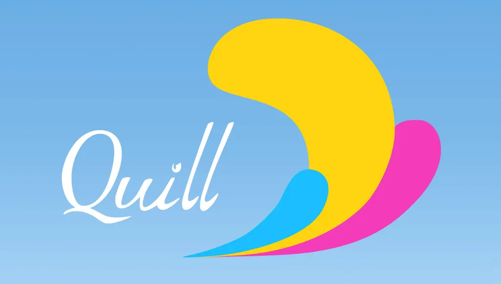
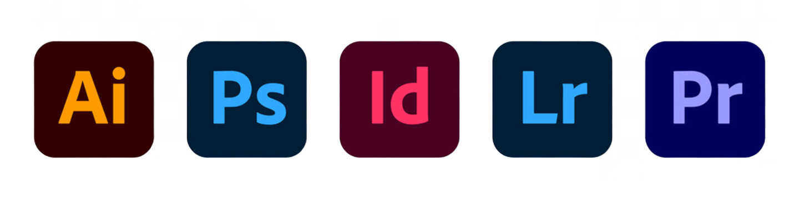
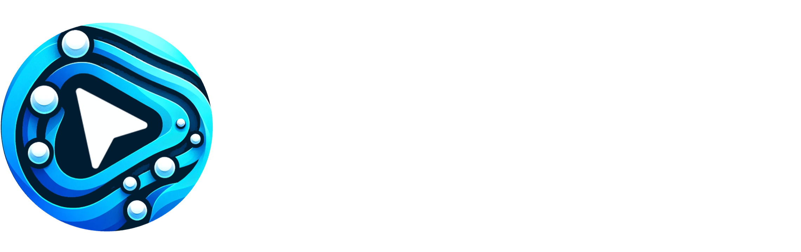
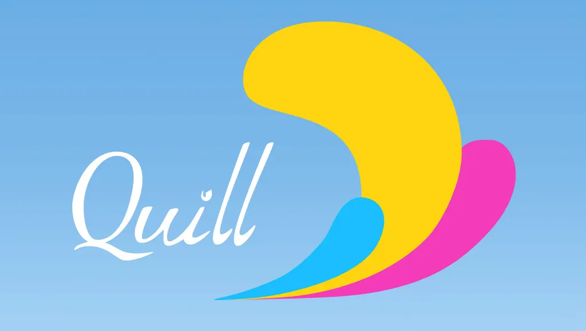
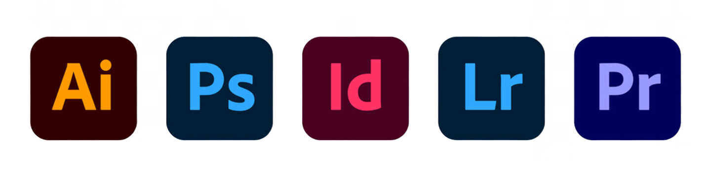
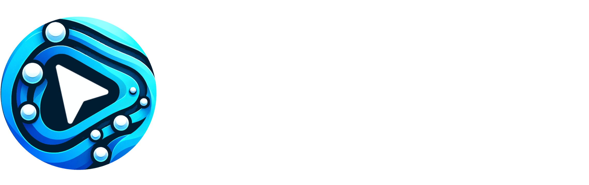

Bienvenue sur le portfolio de Nico Krash
Je suis Nicolas Krasnoholowy, artiste visuel 2D/3D passionné par la création d'univers immersifs, la narration visuelle et le développement de projets interactifs. Diplômé en design et spécialisé dans la production d’environnements pour jeux vidéo, je travaille avec Unreal Engine sur des projets stylisés comme réalistes. J’accorde une grande importance à la cohérence visuelle, à la direction artistique et à la narration environnementale.
En 2016, j'ai co-fondé le studio Owl Castle Games, où j'ai travaillé sur Ymenok Reborn, un FPS sci-fi au concept original. À travers ce projet, j'ai participé activement à toutes les étapes du développement, depuis les phases de prototypage jusqu'à la présentation du jeu lors d'événements comme la Paris Games Week et Japan Expo. J'ai acquis une expertise en développement sous Unreal Engine (UE4/UE5), en gestion de projet, et en conception de fonctionnalités innovantes. Cette expérience m'a permis de développer une grande autonomie, une capacité d'adaptation et une aptitude à collaborer étroitement avec des équipes pluridisciplinaires.
Je maîtrise particulièrement bien le système de Blueprints avec une connaissance du C++, ce qui m'a permis de concevoir des mécaniques de gameplay style FPS, 2D Metal Slug-like, d'intégrer des environnements interactifs et d'optimiser les performances globales des projets. Par ailleurs, ma curiosité et mon sens du détail m'ont amené à explorer des styles visuels variés, notamment grâce à des outils comme Substance Painter, ZBrush, et des techniques d'IA générative. Ces compétences me permettraient de m'adapter à des esthétiques uniques, notamment des rendus proches de l'aquarelle, et de collaborer efficacement avec des équipes artistiques pour faire évoluer les pipelines de production.
Outre mes compétences techniques, je suis passionné par la conception et la mécanique des jeux. J'ai une solide culture vidéoludique et un réel intérêt pour la recherche de solutions innovantes qui améliorent l'expérience des joueurs. J'accorde une grande importance à la communication au sein des équipes, favorisant ainsi un environnement de travail collaboratif et bienveillant.
🌐 Présence en ligne
🧠 Projets & Réalisations
🛠️ Logiciels utilisés

 





📽️ Démos & vidéos
- 🎮 Démo Ymenok Reborn – Télécharger sur 1fichier
- 🌀 Test d'animation – Voir sur YouTube
- 🦔 WIP Sonic MechaDrive – Voir sur YouTube
📁 Archives & CV
📧 Contact : krasnoholowy@gmail.com